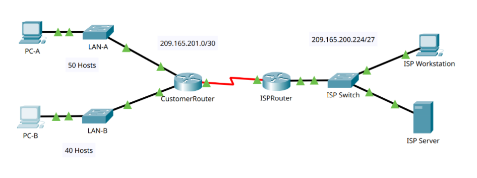
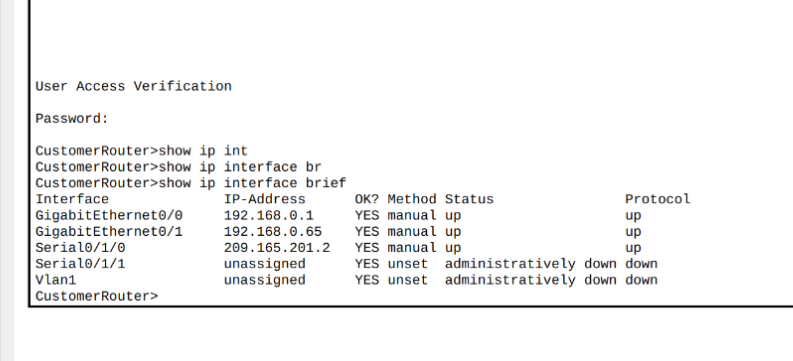
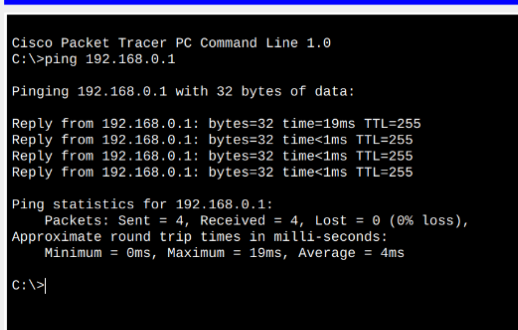
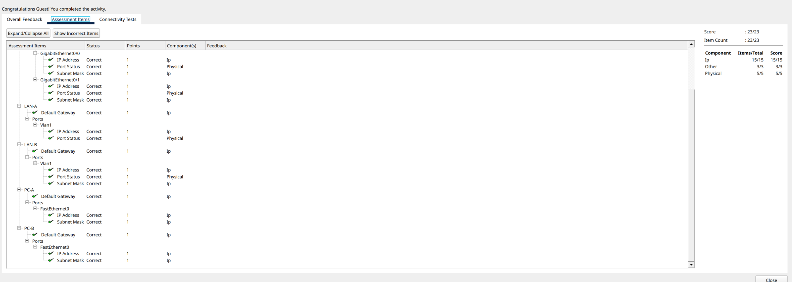

Lab 15 - Packet Tracer - Subnet an IPv4 Network

By An Le
In Lab 15 - Subnet an IPv4 Network, we will subnet a customer network into multiple subnets. The subnet scheme is based on number of host computers required in each subnet and future expansion.
Part 1: Subnet the Assigned Network
Step 1: Create a subnetting scheme that meets the required number of subnets and required number of host addresses.
Before diving into how to create subnet, answer some of the questions first can help with further step below.
- How many host addresses are needed in the largest required subnet?
- **50**
- What is the minimum number of subnets required?
- **4** (LAN A, LAN B, 2 unused networks)
- The network that you are tasked to subnet is 192.168.0.0/24. What is the /24 subnet mask in binary?
- **11111111.11111111.11111111.00000000 (255.255.255.0)**
- In the network mask, what do the ones represent?
- **Network portion**
- In the network mask, what do the zeros represent?
- **Host portion**
- 1) (/25) 11111111.11111111.11111111.10000000
- (255.255.255.128) Subnets 2^1 = 2, Host 2^7 - 2 = 126
- 2) (/26) 11111111.11111111.11111111.11000000
- (255.255.255.192) Subnets 2^2 = 4, Host 2^6 - 2 = 62
- 3) (/27) 11111111.11111111.11111111.11100000
- (255.255.255.224) Subnets 2^3 = 8, Host 2^5 - 2 = 30
- 4) (/28) 11111111.11111111.11111111.11110000
- (255.255.255.240) Subnets 2^4 = 16, Host 2^4 - 2 = 14
- 5) (/29) 11111111.11111111.11111111.11111000
- (255.255.255.248) Subnets 2^5 = 32, Host 2^3 - 2 = 6
- 6) (/30) 11111111.11111111.11111111.11111100
- (255.255.255.252) Subnets 2^6 = 64, Host 2^2 - 2 = 2
- Considering your answers above, which subnet masks meet the required number of minimum host addresses?
- /25, /26
- Considering your answers above, which subnet masks meets the minimum number of subnets required?
- /26, /27, /28, /29, /30
- Considering your answers above, which subnet mask meets both the required minimum number of hosts and the
minimum number of subnets required?
- /26
From that, we could fill in the table below.
| Subnet Address | Prefix | Subnet Mask |
|---|---|---|
| 192.168.0.0 | /26 | 255.255.255.192 |
| 192.168.0.64 | /26 | 255.255.255.192 |
| 192.168.0.128 | /26 | 255.255.255.192 |
| 192.168.0.192 | /26 | 255.255.255.192 |
Step 2: Fill in the missing IP addresses in the Addressing Table
Follow previous lab instruction, enable priviledge mode, configure terminal and set IP address for
- Customer Router
- G0/0
ip address 192.168.0.1 255.255.255.192 - G0/1
ip address 192.168.0.65 255.255.255.192
- G0/0
- LAN A
- VLAN1
ip address 192.168.0.2 255.255.255.192 - Default gateway
ip default-gateway 192.168.0.1
- VLAN1
- LAN B
- VLAN 1
ip address 192.168.0.66 255.255.255.192 - Default gateway
ip default-gateway 192.168.0.65
- VLAN 1
- PC A with ip
192.168.0.62, subnet mask255.255.255.192, default gateway192.168.0.1 - PC B with ip
192.168.0.126, subnet mask255.255.255.192, default gateway192.168.0.65

Part 2: Configure the Devices
Configure Step 1, 2, and 3 can follow previous lab instruction by enable secret, password, and hostname for Customer Router.
Part 3: Test and Troubleshoot the Network

a. Determine if PC-A can communicate with its default gateway. Do you get a
reply?
- Yes
b. Determine if PC-B can communicate with
its default gateway. Do you get a reply?
- Yes
c.
Determine if PC-A can communicate with PC-B. Do you get a reply?
-
Yes
